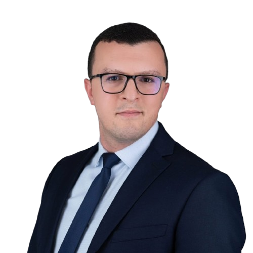

Mr. BOUDRIKA
Oussama

With more than 7 years of experience in the aeronautical,
automotive, mining and chimical industry
 Green Belt: Lean Six Sigma
Green Belt: Lean Six Sigma
Green Belt: Lean Six Sigma
PERSONAL INFO
30 Years old, married
8 OPERATION DARIS NOUACEUR, Casablanca, Morocco
+212 6.57.37.97.52
boudrika.oussama20@gmail.com
EDUCATION
LANGUAGES
- French : C1
- English : professional
- German : B1
WORK EXPERIENCE
Project Manager - Operational Excellence Consulting -
DOOC, Casablanca, Morocco / Sep-2022 - Present
- Support Customer to develop their progress plan in accordance with the company's vision & strategy ;
- Making business proposals to our customer : Ressources, Budget, planning, targets ;
- Diagnosis to identify main problems, priorities and improvement opportunities for our customer ;
- Change management and project implementation, animation of steering committees with the client ;
- Coach / Tutor OPEX projects: Lean Six Sigma, Cost Deployment, Process Exellence, Asset Management ;
- Audit of technical and performance systems, restitution reports and make recommandations.
Production Coordinator - Cutting & Lead prep -
MATIS AEROSPACE, Nouaceur / Feb-2017 - Jun-2019 (2,3yrs)
- Management of 5 Shift Leaders, 14 Team Leaders and 300 Operators over 3 production shifts (3x8);
- Development of production strategies according to customer and company vision and values ;
- Daily / weekly / monthly monitoring of the main KPI's: Efficiency, Output, Scrap, WIP, and PPM ;
- Planning and prioritization of maintenace activities and workshops to minimize dowtimes ;
- Recruitment, training and supervision of new recruits in collaboration with the training department ;
- Implementation of continuous improvement systems (lean 2.0, Kaizen, RPS, PPS) - Weekly reviews ;
- Conduct of internal and external audit plans (IATF, OSA, LPA, Audit Process, Safety and Environment).
Project Engineer - Methods & Industrialization -
MATIS AEROSPACE, Nouaceur / Feb-2017 - Jun-2019 (2,3yrs)
- Preparation of start-up/transfer plans for new projects between sites: France, Mexico, Morocco...
- Management of harness pricing activities (time list& material cost) with the customer ;
- Development of internal configuration procedures and successful completion of the Boeing audit ;
- Assurance of data reliability in terms of raw materials and tools :
- Creation and modification of standard operation procedures and work instructions ;
- Support of manufacturing and success of the FAI and Ramp-Up phases ;
- Initiate and drive problem solving workshops by using methods: DMAIC, KAIZEN, 5W and 8D.